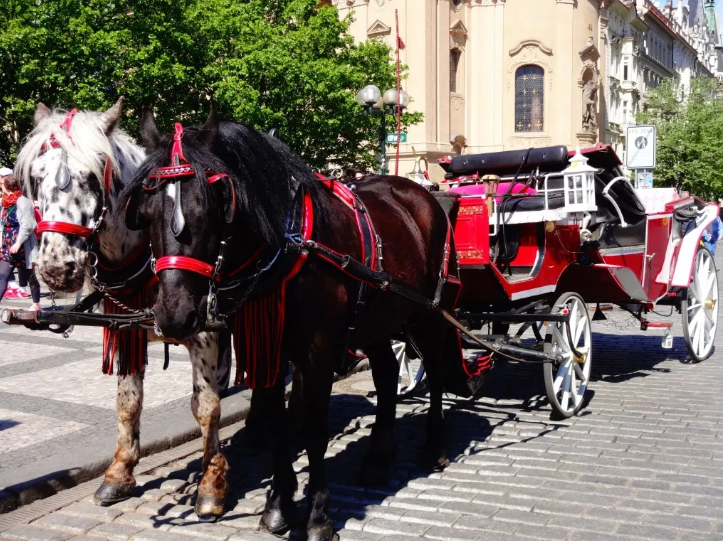
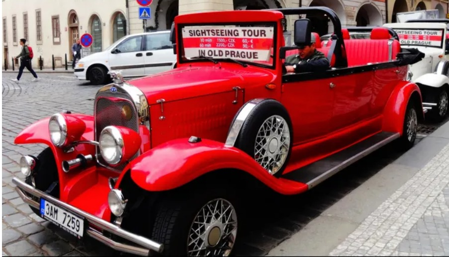
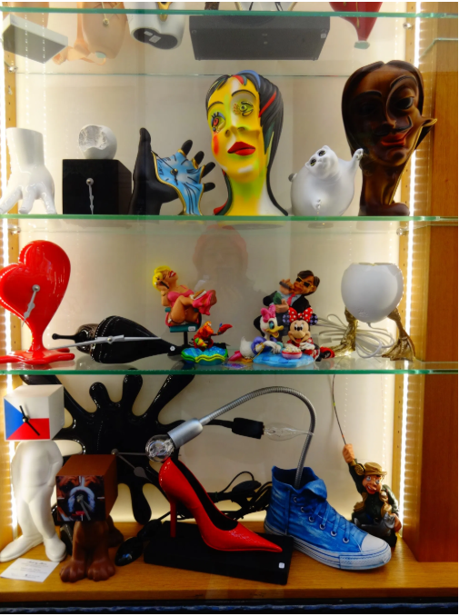
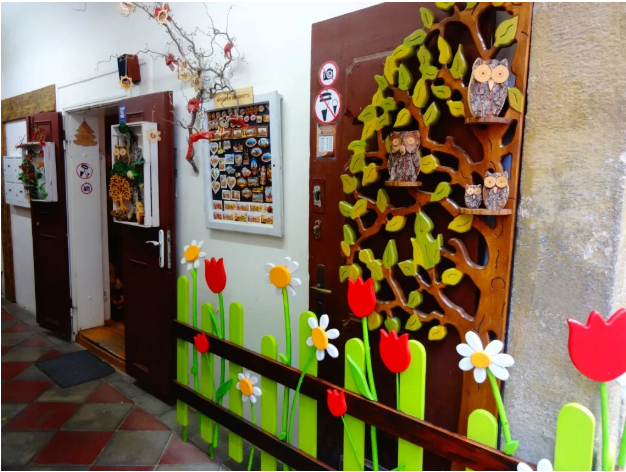
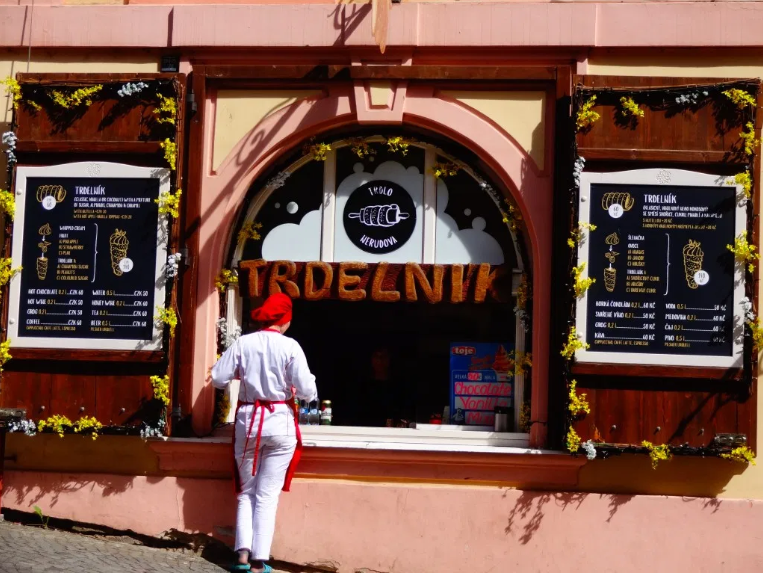
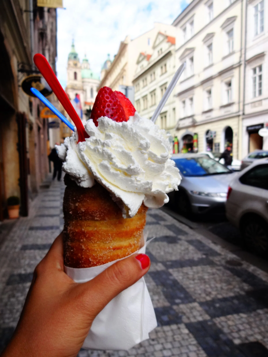
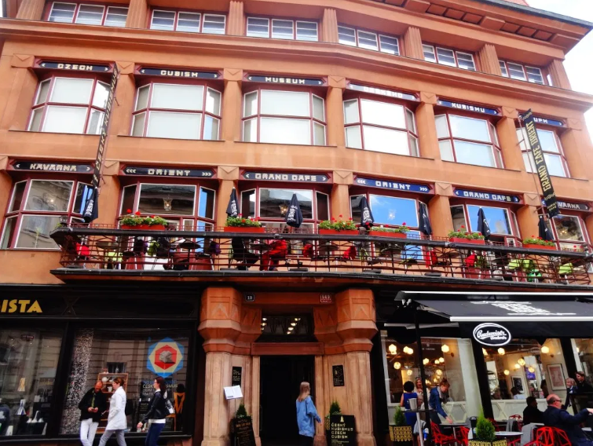

Prague is the capital and largest city in the Czech Republic, the 14th largest city in the European Union and also the historical capital of Bohemia.
It is known as the city of 100 Spires because of its beautiful cathedrals and their pointy spires.
Since the Czech Republic falls under the EU, a Schengen Visa is required to travel to Prague.
The currency in Prague is the Czech Koruna (CZK). 25 CZK is equalto 1 Euro (Approximately, for your conveinence). Make sure to carry enough CZK in Prague, since most of the shopkeepers, resturants and other sightseeing attractions accept only Koruna. You can even get other currency exchanged in Prague for Koruna.
There is a genuine exchange center adjacent to the Palladium Mall (Located just about 15-minute walk from the Old Town Square) in Prague which gives the best rate possible.
DO NOT exchange currency at exchange centers which charge an exorbitant commission.
If you are not carrying enough Koruna, ATM is the best way to withdraw local currency.
The official language of the Czech Republic is Czech, which is spoken by over 96% of its inhabitants. But don't worry, you should have no problem in communicating in English in Prague, and to a lesser extent in German. Older people often speak Russian and German.
There are different seasons in Prague just like any other place in the world. We shall discuss each one and you can decide when do you want to visit this beautiful city.
Spring (April - Early June) - Days are longer, accomodations are cheaper, there are fewer tourists and the weather is pleasant to cool.
Summer (Late June - August) - Most people visit Europe during this time. But mind it, everything will be expensive in Europe if you travel during the peak season.
Fall till Winters (Seot - March) - Days are shorter, accomodations are cheaper, there are fewer tourists and the weather is cold to chilliy.
3-4 days minimum is what we suggest if you want to cover most of the highlights at a good speed. We used to walk for like 10-11 hours daily because we wanted to cover all the places mentioned below. And we even succeeded in covering most of them. You can even stay for more number of days. the more, the better.
Check out some useful apps for traveling in Prague and a very unique app called Czech Republic - Land of Stories.
Prague is divided into 12 zones. Parha 1 and 2 have most tourist attractions in the vicinity. It will help you to decide your stay. We mostly book our stays through Booking.com, Hostelworld.com, Airbnb.co.in.
During our trip we stayed at Your HOME in Prague, apt. Talia. It was near to the city center, spacious, clean and well-maintained. We would recommend it to anyone visiting Prague.
Some other great options for stay are Charles Bridge Economic Hostel right next to the Charles Bridge, Prague Siesta Apartments nera to the Old Town Square.
You can easily get around Prague by walking or by using the public transport. If you plan to stay for 2-3 days, we suggest you get a day pass for public transport made. It saves money and is easy to use.
Make sure to validate your day pass or one-time ticket as soon as you get onboard in the yellow vending machine to avoid heavy fines. Just put your ticket in, there is an arrow on the ticket showing how to do it. It will print time and date on it.
Remember: The day pass should be validated only once, in the beginning when you start your journey. The one-time ticket should be validated each time you buy a new ticket. DO NOT validate your day pass or one-time ticket twice. It would be considered as invalid and would attract a hefty fine.
 The main Prague shopping areas are Wenceslas Square and Republic Square , where local shops compete with international department stores. The best way to approach this area is to take a picture in the main street and meander away along the side streets, get lost on purpose and you will discover local shops that sell everything at cheap rates starting from cameras, candies, shoes, souvenirs, clothes and so on. Make sure you enter the buildings around the area because they are dotted with small shops. From the main street, and if you have the time, wander off about five minutes out in all directions then you will discover the secret stores around Wenceslas Square.
 Pařížská street, which means Paris Street in Czech is perfectly called this way. It gives you the pleasure of shopping in luxury boutiques of the world’s most prominent fashion brands. It is considered the most unique and high-priced street in Prague. It is located in Old Town district of Prague 1, which connects the Old Town Square and the Curie Square.
You must buy a travel insurance for traveling to Prague. You basically need a Schengen Travel Insurance for traveling to any of the 28 countries in the European Union. The minimum sum insured should be €30,000, as per the Schengen Visa requirements.
Trdelnik or the Spit/Chimney Cake is a must have when in Prague. It’s deliciously made from rolled dough that is wrapped around a stick, then grilled and topped with cinnamon sugar and walnut mix. You can add toppings of your choice such as Nutella, strawberry, fresh cream, ice-cream, coconut, vanilla sauce, chocolate etc.
You can try out Trdelnik in this fabulous creperie called Creperie U Kajetána, in Nerudova street, on the way up to the castle.
 It is a historic cafe, halfway between the Old Town Square and the Powder Tower, which seems in a time warp as nothing has changed since it was built well over 100 years ago. A nice place to relax after a hard day visiting the tourist attractions. You can try coffee, cakes, salads, and crepes here.
Fun Fact: Did you know that the Czech Republic has the highest beer consumption per capita in the world?! The biggest brands are Pilsner, Budweiser, Gambrinus, Staropramen, Kozel, Bernard, Starobrno, Svijany (and surely some more). And you can get a pint of beer for as cheap as 25 CZK (1 Euro)! So, what are you waiting for? Go, splurge on those beers at a local brewery.
Secret: Deepak used to have an average of 5 beers a day during our trip, and he didn’t gain an inch/kg after our trip! How?? The answer is we used to walk for 10-11 hours daily. So, no extra calories gained. 🙂
Letna Park is a great place to hang out, chill, and have some beer. It is a large park overlooking the Vltava river and even has a beer garden. You can spend your time here participating in sports, walking, picnicking or relaxing in the summer garden restaurant in the Letná chateau.
Prague has one of the best nightlife in Central Europe and ROXY, JazzDock, Cross Club, Duplex etc. are some of the best bars/clubs in Prague which the locals recommend. Their amazing atmosphere drives many popular DJ’s and bands from the world. They have exclusive shows every night and you must attend one of them!